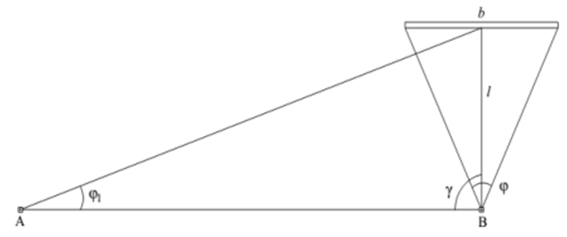
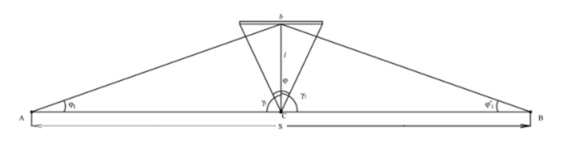

8-амалий иш Мавзу: Инженерлик полигонометриясида бурчак ва масофа ўлчашнинг ўзига хослиги
Шаҳарлар ҳудудида барпо этиладиган полигонометрия йўлларида, ташқи муҳитнинг бурчак ўлчашга
таъсири, ўлчаш жараёнини қийинлаштиради. Бунга қуйидаги омилларни киритиш мумкин:
1. Томонлар узунлигини ва ўлчашга қулай бўлган шароитларда
марказлар ва теодолитларни ўрнатиш учун тўсиқларнинг
мавжудлиги;
2. Ёнлама рефракция;
3. Тармоқ яқинида меҳанизмлар ва транспортлар ҳаракати
таъсири натижасида теодолит ва визир маркаларининг барқарор эмаслиги;
Полигонометрия тармоғида қисқа томонларнинг мавжудлиги теодолит
ва визир маркаларида жудаям аниқ марказлаштиришни талаб этади.
Марказлаштиришни ўртача қиймати 0,5-0,7 мм дан ошмаслиги керак.
Енлама рефракция ва бошқа ташқи муҳит таъсирини камайтириш мақсадида полигонометрия
йўлларида визирлаш нури бино деворидан 1м дан каттароқ масофадан ўтишига, йўл томонларини
кўчанинг соя томонларига жойлаштиришга ва ўлчаш ишларини булутли ҳавода амалга оширишга,
меҳанзимлар ишлаб турган вақтда ўлчашларни тўхтатишга ҳаракат
қилинади.
Агарда А ва В нуқталар (30.1-расм) орасида ўзаро кўриниш бўлмаса, у ҳолда ёрдамчи D нуқта
танланади ва l масофа ҳамда бурчаклар ўлчанади.
Аниқланадиган бурчак қуйидаги ифода ёрдамида ҳисобланади:
1-расм. А ва В нуқталар орасида кўриниш бўлмаган ҳолатга оид.
Инженерлик полигонометриясида чизиқли ўлчашлар учун, масофани бевосита ўлчашга
асосланган
усуллар ва свето дальномерлар кенг кўламда қўлланилиб келинмоқда.
Полигонометрия тармоқларида томонлар узунлигини ўлчашда қисқа базисли параллактик усул
кенг
қўлланилади (30.2-расм).
Аниқланадиган АВ томон узунлиги қуйидаги ифода ёрдамида ҳисобланади:
Қисқа базис сифатида 2-3 метр узунликдаги жезлдан фойдаланилади. Жезлалар горизонтал,
визирлаш чизиғига перпендикуляр ҳолатда штативга ўрнатилади.

2-расм. Қисқа базисли параллактик усул.
Томон узунлигини ўлчашнинг нисбий хатолиги қуйидагига тенг:
Аниқлигини ошириш учун ўлчанадиган чизиқни икки қисмга бўлиш
мақсадга мувофиқ. Бундай ҳолат учун 3- расмдаги шаклдан фойдаланиш
тавсия этилади.

3- расм. Қисқа базисли параллактик усул.
AB = S томон узунлиги қуйидагича ҳисобланади:
Томон узунлигини ўлчаш ўрта квадратик хатолиги
Бу ерда mb/b
– базис томонни ўлчаш нисбий ўрта квадратик хатолиги.
Кейинги пайтларда томон узунлигини ўлчаш қисқа базисли – створ усулда амалга оширилади.
Бунда полигонометрия йўли 50-60 м узунликдаги кесмаларга бўлинади ва ҳар бир кесма рўмб
шаклидаги қисқа базисли звенолар ёрдамида ўлчанади.
4-расм. Қисқа базисли-створ усулига оид
Умумий томон узунлиги ўлчанган кесмалар йиғиндиси сифатида
ҳисобланади
S = S1 + S2 + S3
Бунда ҳар қайси кесма узунлиги қуйидагича ҳисобланади:
Бу усулда томон узунлигини ўлчаш нисбий хатолиги қуйидагига тенг
Бундан кўриниб турибдики, бу усул анча юқори аниқликда масофа ўлчашни таъминлаши мумкин.
Бугунги кунда қурилиши майдонида масофа ўлчашларда электрон таҳеометрлар қўлланилмоқда. Бу
томонлар узунлигини юқори аниқликда, қисқа вақтда, қўшимча ҳисоблашларсиз амалга оширишга
имкон яратади. Электрон тахеометрлар ёрдамида масофа ўлчаш тартиби ва ушбу асбоблар
тўғрисидаги маълумотлар дарсликнинг ўн биринчи бобида батафсил ёритилган.